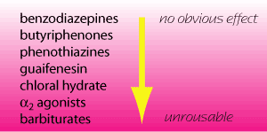

Sedatives
|
ataractic (= tranquilliser) - reduces anxiety without
causing drowsiness. Usually produce no obvious effect in animals. In veterinary practice, the distinctions between these classes of drugs is usually not clear - I will refer to them all as sedatives. Most drugs have effects on a wide variety of receptor systems but probably work by reducing input to the ascending reticular formation. Activation of the ascending reticular formation will increase arousal and is thought to be be responsible for consciousness. Knowledge of the receptors affected is important to predict interactions and side effects.  Indications |
|
| commonly used drugs acepromazine |
|
|
|
| 5 CNS index |
| |
copyright
Massey University
|